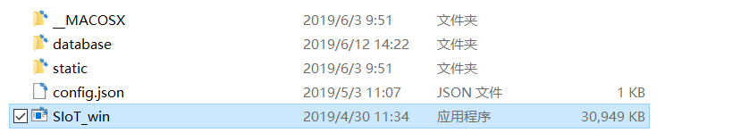
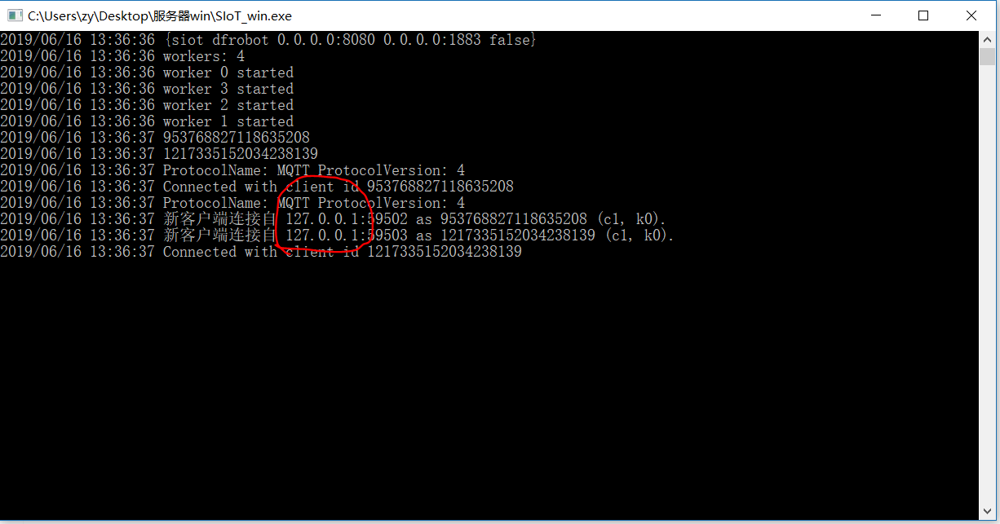
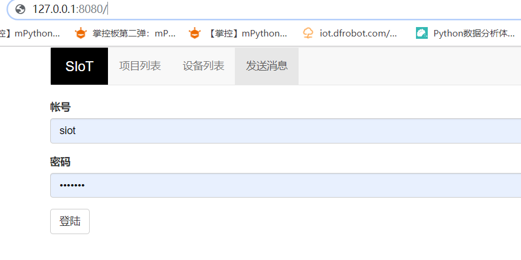

7. 互动媒体之龙舟竞赛¶
基于SIoT和和掌控板，可以设计一些多人竞赛的游戏，然后借助Mind+实时呈现出来。
案例作者：张喻，林淼焱

7.2. 原理介绍¶
本案例分为两个终端，分别为划手1（player1）和划手2（player2）。player1端和player2端通过连接同一物联网平台MQTT（siot）进行数据的交换，从而实现联机比拼的功能。
7.3. 准备工作¶
1.运行SIoT
 2.将上图中的IP地址输入网页，如下图：
3.运行Mind+1.5.5及以上的版本
mind+下载地址：http://mindplus.cc
说明：本教程使用的是Mind+1.5.5版本软件
7.4. 操作步骤¶
1.运行mind+
选择右上角“实时模式”，点击左下角“扩展”，添加”网络服务”中的“MQTT”；

2.编写代码
1）在终端1（代码1）的“背景”中写如下程序；
说明：本操作是将掌控板设备与服务器建立连接，在服务器上能够实时反馈数据。

并修改MQTT服务器相关的参数；
说明：Topic设置为“xzr/001”（项目ID/名称）

2）在终端2（代码2）中创建两个角色，分别为龙舟1和龙舟2；

3）点击角色1（龙舟1），写如下代码；

4）点击角色2（龙舟2），写如下代码；

7.5. 参考代码¶
代码下载地址：https://github.com/vvlink/SIoT/tree/master/examples/Mind%2B
演示视频地址：https://github.com/linmiaoyan/Lins-video/blob/master/Mind%2B%E9%BE%99%E8%88%9F%E7%AB%9E%E8%B5%9B.mp4
7.6. 拓展思考¶
利用这一作品原理，可以制作一些集体互动的大型游戏。